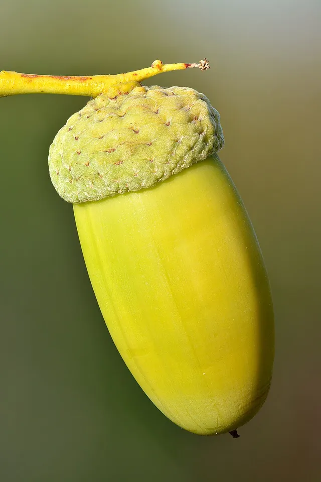

Wild nut · Sep–Nov
Acorns
Quercus
Also called Acorn, Oak
Acorns is a wild nut you can forage from September to November across the United States. Oak nuts in scaly caps. White oak acorns are sweetest.

Caution. Bitter tannins must be leached out first.
When is acorns in season in the United States?
Acorns is usually in season September to November. Timing shifts with weather, latitude and altitude.
Where does acorns grow in the United States?
Acorns grows across the United States. Regions: Northeast, Southeast, Midwest, Great Plains, Southwest, Rocky Mountains, Pacific Northwest, California, Alaska.
How do you recognise acorns?
Oak nuts in scaly caps. White oak acorns are sweetest.
How do you harvest acorns?
Gather fallen acorns without holes. Float them and discard floaters.
How do you eat acorns?
Leached acorn flour for bread, pancakes and acorn noodles.
How do you store acorns?
Leach, dry and grind.
What is acorns good for?
Calories, Fat.
What can you cook with acorns?
- Acorn pancakes: Leached acorn flour mixed half and half with wheat flour.